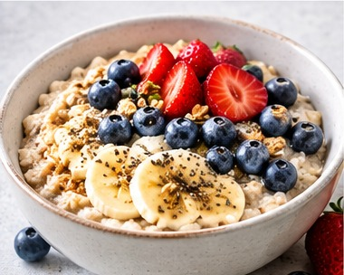
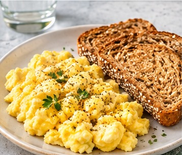
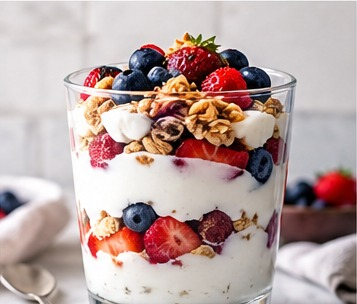
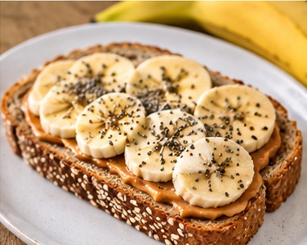
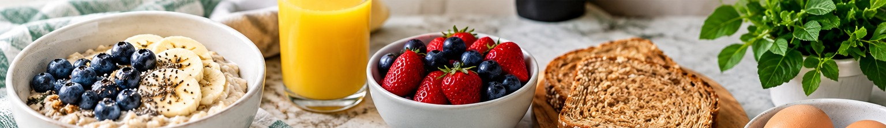

Fruit Oatmeal
Oatmeal topped with bananas, strawberries, and blueberries. A filling way to start your morning.
Nutrition • Fitness • Budget Living
Healthy habits, affordable meals, and smart tips for a better college life.
Start your day with healthy, affordable meals that keep you energized and ready for college.
Eating breakfast can help you stay energized throughout the day. These simple meal ideas are affordable, easy to make, and perfect for busy college students.

Oatmeal topped with bananas, strawberries, and blueberries. A filling way to start your morning.

A simple breakfast with protein and whole grains to help keep you full.

Greek yogurt mixed with fresh fruit and granola for a quick breakfast.

Whole wheat toast topped with peanut butter and banana slices.

College life can get busy, but eating a healthy breakfast is a good way to start your day. Choosing affordable and nutritious foods can help you build better habits while staying within your budget.